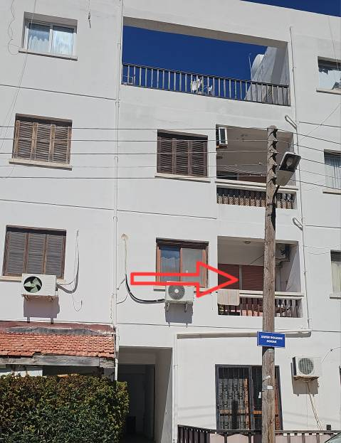
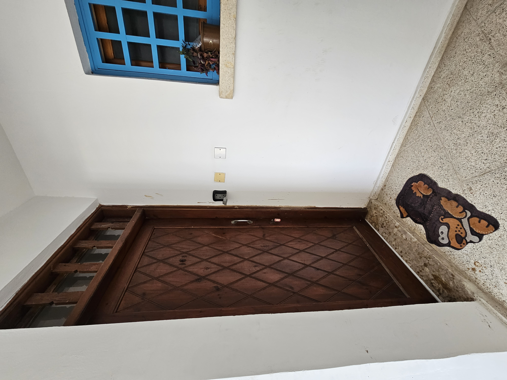
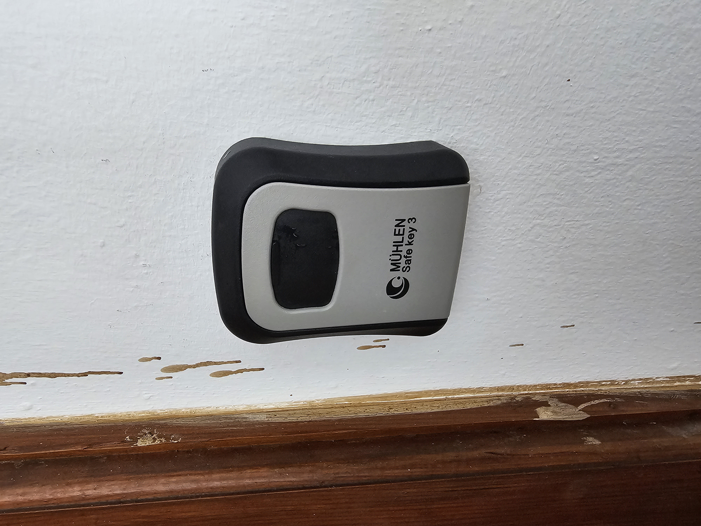
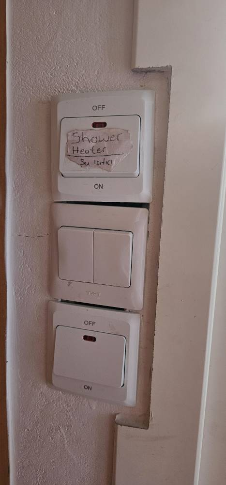
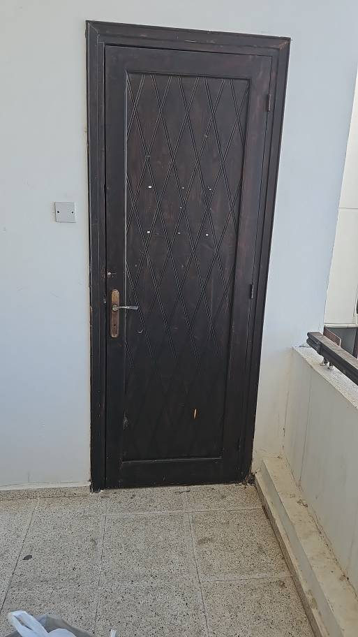

Evin lokasyonu, giriş bilgileri ve temel kurallar

Dairemiz
Dairemiz Peri's Fish Restaurant'ın tam çarprazında yer almaktadır.
Ercan Havalimanı'ndan dairemize ulaşım oldukça kolaydır. Aşağıdaki seçeneklerden birini tercih edebilirsiniz:
Havalimanı çıkışında 7/24 taksi bulabilirsiniz.
Yolculuk yaklaşık 30 dakika sürer.
KIBHAS otobüsleri ile Girne'ye ekonomik şekilde ulaşabilirsiniz.
Otobüs saatleri ve duraklar için aşağıdaki linke bakabilirsiniz:
🚌 Otobüsle geldikten sonra kısa bir taksi yolculuğu gerekebilir
Havalimanında birçok araç kiralama firması bulunmaktadır.
📍 Yol Tarifi Al - Peri's Fish Restaurant
⏱️ Ortalama süre: 30 dakika
📏 Mesafe: ~30 km

Daire Kapısı

Anahtar Kutusu
Aşağıdaki videodan anahtar kutusunun kolayca nasıl açılacağını izleyebilirsiniz.
TV'de Netflix üyeliği vardır. Lütfen "Guest" kişisini seçerek oturum açınız. Herhangi bir problem yaşarsanız lütfen bize ulaşın.
Sıcak su / duş: Dairede sıcak su sistemi güneş enerjisi ile çalışmaktadır. Güneşli günlerde ve yaz aylarında, herhangi bir ek işlem yapmadan sıcak suyu kullanabilirsiniz. Sıcak suyun gelmesi için duşu yaklaşık 1–2 dakika açık bırakmanız yeterlidir. Güneşin yetersiz olduğu günlerde ise elektrikli şofbeni kullanabilirsiniz. Şofben sayesinde her zaman kesintisiz sıcak suya erişim sağlanır. Herhangi bir sorun yaşamanız durumunda lütfen bizimle iletişime geçmekten çekinmeyin.

Su ısıtıcı (şofben) için, lütfen yukarıdaki fişi açın.
Aşağıdaki fiş çamaşır makinesi içindir
WIFI: Kervansaray
Şifre: Misafirlere WhatsApp aracılığı ile bildirilecektir

Çöpleri bu kapıyı açıp tenekeden içeri atın lütfen
Dairemiz, Girne'nin en güzel sahil bölgelerinden biri olan Kervansaray'da yer almaktadır. Deniz, kumsal ve doğa sadece birkaç adım uzaklıktadır. Hem kısa hem uzun süreli konaklamalar için ideal bir lokasyondur.
Kervansaray'ın güzel konumu sayesinde hem şehir hayatına kolay erişim sağlayıp, hem de doğa ve deniz keyfi yaşayabilirsiniz.